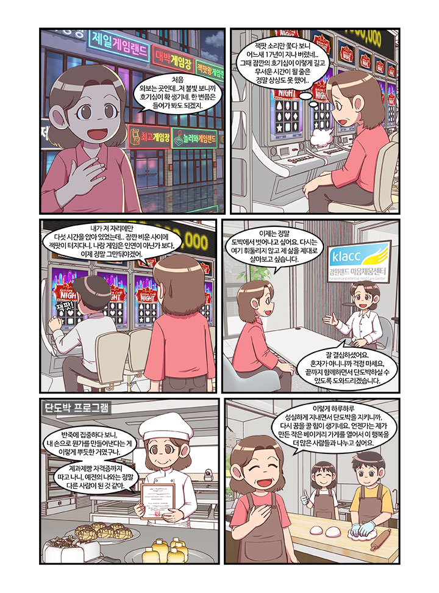

글. 편집실 카툰.유니콘스튜디오
도박중독의 늪에서 벗어나 스스로를 직면하고 사랑하는 법을 배운 단도박자 박민정(가명) 씨. 카지노를 접하기 전까지 평범한 회사원이었던 그녀는 17년이 넘는 세월을 도박에 몰두하며 자신을 혹사시켰다. 자신을 갉아먹던 과거에서 벗어나 현재는 베이킹 관련 강의를 하며 건강한 성취감을 찾고 있는 민정 씨의 진솔하고 깊이 있는 회복 이야기를 들어본다.

카지노를 접하기 전 민정 씨는 평범한 회사원이었다. 그러나 도박중독은
어느 날 갑자기 찾아온 것이 아니라, 훨씬 이전부터 그녀의 내면에
뿌리내리고 있었다고 회상한다.
단도박 프로그램을 진행하며 자신을 직면했을 때, 가장 먼저 떠올린 경험은
중학교 3학년 때 친구들과 함께 한 고스톱이었다. 당시 돈을 벌 수 있는
상황이 아니었기에 부모님의 돈을 훔쳐서 게임을 했던 사실. “부모의 돈을
훔쳐서 하는 걸 생각했을 때, 전 그때부터 이미 그런 성향이 있었다고
생각했어요.” 이후 학업으로 바빠지고 친구들과도 멀어지면서 자연스레
잊고 살았지만, 직장 생활을 시작한 후 그 욕구는 종로 거리에서 다시
그녀를 붙잡았다.
당시 길거리에 즐비했던 게임장의 크게 틀어진 음향과 다른 사람의 잭팟
소리는 호기심으로 그녀를 이끌었고, 금전적 여유까지 더해지면서 그녀는
더욱 깊이 빠져들었다. 그러나 단속으로 인해 앞문으로 드나들던 게임장을
남몰래 뒷문으로 숨어 다녀야 하는 신세가 되자, 그녀는 문득 생각했다.
‘내가 내 돈 들여서 게임을 하겠다는데, 남들한테 싫은 소리 들어가며 눈치
봐야 하나?’ 그 순간, 합법적으로 게임을 할 수 있는 강원랜드가
오픈했다는 소식이 들렸고, 그녀는 그곳으로 향했다. 그렇게 17년이 넘는
세월이 흘러갔다.
사람들은 흔히 단도박의 계기를 묻곤 한다. 실제로 단도박자들과 이야기를
나누다 보면, 대부분 특별한 이유를 가진 경우는 드물다. 단도박은 대개
한순간, 갑자기 찾아온다.
민정 씨도 예외는 아니었다. 여느 때와 다름없이 돈을 들고 한 곳에서 오랜
시간 게임을 했다. 돈을 잃지도, 얻지도 못하는 상황이 반복되자 지루해진
그녀는 잠시 자리를 옮기기로 했다. 바로 그 순간, 조금 전까지 앉아 있던
자리에서 잭팟이 터졌다. 그 소리를 듣는 순간, 그녀는 깨달았다. 게임과
자신은 인연이 아니었다는 것을. 단도박의 계기는 그렇게, 한순간에
찾아왔다.
단도박을 시작한 뒤, 민정 씨는 자신에게서 가장 크게 달라진 점으로
‘스스로를 직면할 수 있는 힘’을 꼽는다. 예전에는 남이 싫어할까 봐
거절하지 못한 채 자신을 혹사하며 지냈지만, 삶의 밑바닥부터 자신을
마주할 용기를 내자 남을 아끼듯 자신을 돌보고 사랑해야 한다는 마음이
자라기 시작했다.
이러한 변화의 과정에서 마음채움센터(이하 클락)의 단도박 프로그램이
중요한 발판이 되었다. 클락에서 베이킹 수업을 들으며 그녀는 ‘시간을
흘려보내는 하루’ 대신 ‘무언가를 만들어 내는 하루’를 경험했다. 반죽을
하고 빵을 굽는 동안 오랜만에 온전히 자신의 힘으로 무언가를 해냈다는
감각을 느꼈다. 제과제빵 자격증을 취득한 뒤에는 강원랜드 재활재단이
운영하는 베이커리에서 3년 동안 일했다. 현재는 프리랜서로 베이킹 관련
강의를 진행하며 일상의 성취감을 쌓아 가고 있다. 앞으로는 베이킹을
기반으로 작은 가게를 열어 보고 싶다는 꿈을 가지고 있다.
민정 씨는 현재 도박중독으로 어려움을 겪는 이들에게 가장 간절한 조언을
전한다. “스스로를 직면하고 본인을 먼저 사랑하세요. 남의 시선에
얽매이지 말고, 필요한 순간 거절할 용기를 가지세요.”
본인 스스로의 삶을 직면했을 때, 논밭에 새싹이 자라듯, 꿈틀거리는
마음을 가지게 될 것이라고 힘주어 말한다. 잃어버렸던 ‘나’를 되찾는
고통스러운 여정을 통해 비로소 자신을 사랑하는 법을 배운 민정 씨의
이야기는, 지금 절망 속에 있는 많은 이들에게 가장 따뜻하고 현실적인
응원이 될 것이다.